UD 2 El lenguaje PHP. 5 Funciones
Duración Estimada: 8 sesiones, 16 horas
RA2 Escribe sentencias ejecutables por un servidor Web reconociendo y aplicando procedimientos de integración del código en lenguajes de marcas.
- A Se han reconocido los mecanismos de generación de páginas Web a partir de lenguajes de marcas con código embebido.
- B Se han identificado las principales tecnologías asociadas.
- C Se han utilizado etiquetas para la inclusión de código en el lenguaje de marcas.
- D Se ha reconocido la sintaxis del lenguaje de programación que se ha de utilizar.
- E Se han escrito sentencias simples y se han comprobado sus efectos en el documento resultante.
- F Se han utilizado directivas para modificar el comportamiento predeterminado.
- G Se han utilizado los distintos tipos de variables y operadores disponibles en el lenguaje.
- H Se han identificado los ámbitos de utilización de las variables.
RA3 Escribe bloques de sentencias embebidos en lenguajes de marcas, seleccionando y utilizando las estructuras de programación.
- A Se han utilizado mecanismos dedecisión en la creación de bloques de sentencias.
- B Se han utilizado bucles y se ha verificado su funcionamiento.
- C Se han utilizado «arrays» para almacenar y recuperar conjuntos de datos.
- D Se han creado y utilizado funciones.
- E Se han utilizado formularios Web para interactuar con el usuario del navegador Web.
- F Se han empleado métodos para recuperar la información introducida en el formulario.
- G Se han añadido comentarios al código
OBJETIVOS Entrega 2
Estructuras de control, Creación de funciones y formularios
Introducción
En la clase anterior estudiamos bucles, condicionales y otras estructuras de control del flujo. Hoy veremos Funciones y arrays.
1 Funciones
Cuando quieres repetir la ejecución de un bloque de código, puedes utilizar un bucle. Las funciones (Manual PHP) tienen una utilidad similar: nos permiten asociar una etiqueta (el nombre de la función) con un bloque de código a ejecutar. Además, al usar funciones estamos ayudando a estructurar mejor el código.
- Como ya sabes, las funciones permiten crear variables locales que no serán visibles fuera del cuerpo de las mismas.
1.1 Creación y Ejecución de funciones. (function)
Ya sabes que, para hacer una llamada a una función, basta con poner su nombre y unos paréntesis: phpinfo();
Para crear tus propias funciones, deberás usar la palabra function .
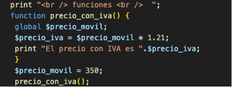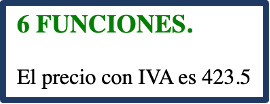
💻Programa16: Completa la función
Programa16.php: Funciones (Ruta:dwes/UD2/Entrega2/Programa16_funcion.php)
Completa los tres huecos y comenta la siguiente función.
<?php
// Función simple sin argumentos
function precioConIVA(): float {
$????= 100; // definido dentro de la función
$iva = ????; // definido dentro de la función
$precioFinal = $precio + ($precio * $iva / 100);
return round($precioFinal, 2);
}
// Ejemplo de uso
echo "Precio con IVA: " . ????() . " €<br>";
?>
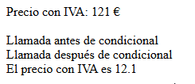
tipo devuelto
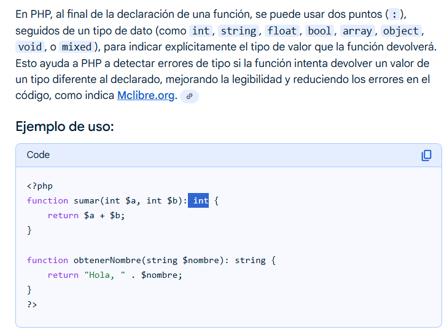
1.2 Funciones condicionales
En PHP no es necesario que definas una función antes de utilizarla, excepto cuando está condicionalmente definida como se muestra en el siguiente ejemplo:
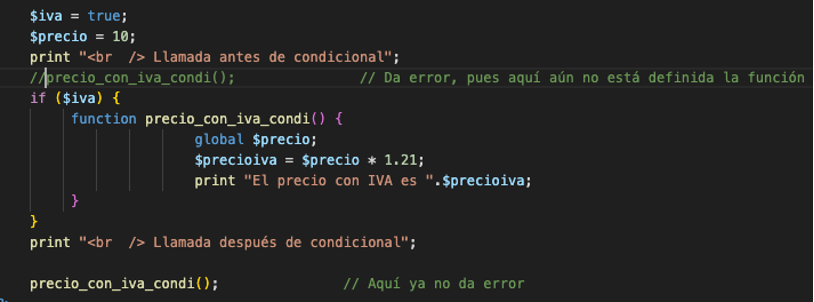
Cuando una función está definida de una forma condicional sus definiciones deben ser procesadas antes de ser llamadas.
- Por tanto, la definición de la función debe estar antes de cualquier llamada.
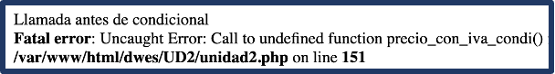
💻Programa16: Amplia tu programa
Programa16.php: Funciones (Ruta:dwes/UD2/Entrega2/Programa16_funcion.php)
Amplía este programa para definir también una función IVA condicional
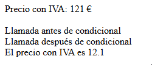
Si controlamos el error:
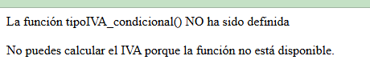
Si la muestro de forma forzada:
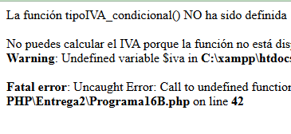
1.3 Argumentos
En el ejemplo anterior en la función usabas una variable global , lo cual no es una buena práctica.
- Siempre es mejor utilizar argumentos o parámetros al hacer la llamada.
- Además, en lugar de mostrar el resultado en pantalla o guardar el resultado en una variable global, las funciones pueden devolver un valor usando la sentencia return .
- Cuando en una función se encuentra una sentencia return , termina su procesamiento y devuelve el valor que se indica.
Por tanto, puedes reescribir la función anterior de la siguiente forma:
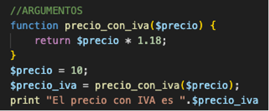
- Los argumentos se indican en la definición de la función como una lista de variables separada por comas.
- Se puse indicar o no el tipo de cada argumento
💻Programa17: Argumentos
Programa17.php: Switch (Ruta:dwes/UD2/Entrega2/)
Completa la siguiente función que es igual que la 16 pero con argumentos
<?php
function ???? (float ???? , float ???? ): float {
// $precio → precio base
// $iva → porcentaje de IVA (por defecto 21%)
$precioFinal = $precio + ($precio * $iva / 100);
return round($precioFinal, 2); // Redondeamos a 2 decimales
}
// Ejemplo de uso
$precioBase = 100;
echo "Precio base: $precioBase €<br>";
echo "Precio con IVA (21%): " . precioConIVA($precioBase, 21) . " €<br>";
echo "Precio con IVA (10%): " . precioConIVA($precioBase, 10) . " €<br>";
?>
Argumentos por defecto
Al definir la función, puedes indicar valores por defecto para los argumentos, de forma que cuando hagas una llamada a la función puedes no indicar el valor de un argumento; en este caso se toma el valor por defecto indicado.
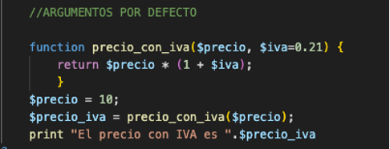
- Puede haber valores por defecto definidos para varios argumentos, pero en la lista de argumentos de la función todos ellos deben estar a la derecha de cualquier otro argumento sin valor por defecto.
Argumentos por referencia (&)
En los ejemplos anteriores los argumentos se pasaban por valor .
- Esto es, cualquier cambio que se haga dentro de la función a los valores de los argumentos no se reflejará fuera de la función.
- Si quieres que esto ocurra debes definir el parámetro para que su valor se pase por referencia , añadiendo el símbolo & antes de su nombre.
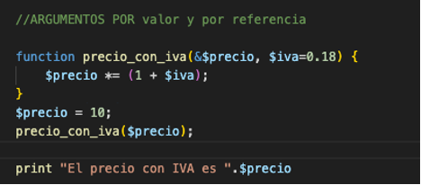
Aritmética de Punteros
Nunca está demás conocer un poco acerca dearitmética de punteros que usan lenguajes de más bajo nivel
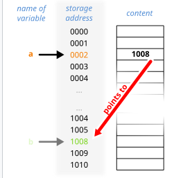
💻Programa18: Argumentos valor y referencia
Programa18.php: Argumentos valor y referencia (Ruta:dwes/UD2/Entrega2/)
Completa el siguiente programa y modifica el valor deIVA por defecto
<?php
print "<br/><br/> ARGUMENTOS POR valor y por referencia <br /> ";//ARGUMENTOS POR DEFECTO
function precio_iva_referencia (&$precio /*le pasas su direcion de memoria 100325*/, $iva=0.21) {
$precio *= (1 + $iva);
RETURN?
}
$precio = 10; //imagina que su MEMORY ADDRESS vale 100325
print "<br/><br/>1- ANTES de llamar a la función: El precio con IVA es ".$precio ; //10
precio_iva_referencia($precio);
print "<br/>2- DESPUES de llamar a la función: El precio con IVA es ". $precio ; //121
print "<br/><b>3- Anota en tus apuntes qué RETURN has usado</b>"
?>
Argumentos variables
- La sintaxis donde la función lleva tres puntos y el nombre del argumento
...$args,...$numerosconvierte todos los argumentos en un array dentro de la función - También existen funciones como (
func_get_args()) que veremos en el siguiente ejemplo - Existen dos enfoques : el moderno con
...$argsy el clásico confunc_get_args()
Lee el siguiente artículo:
Argumentos fijos y variables
💻Programa18: Argumentos variables
Programa18.php: Argumentos variables (Ruta:dwes/UD2/Entrega2/)
Amplía con un segundo bloque PHP y analiza el siguiente ejemplo en tu documentación, añade captura
<?php
// Versión moderna (PHP 5.6+)
function sumarModern(...$numeros) {
$suma = 0;
foreach ($numeros as $n) {
$suma += $n;
}
return $suma;
}
// Versión clásica (PHP <5.6)
function sumarClasico() {
$args = func_get_args(); // obtiene todos los argumentos como array
$suma = 0;
foreach ($args as $n) {
$suma += $n;
}
return $suma;
}
// Ejemplos de uso
echo "Suma moderna (2 + 3): " . sumarModern(2, 3) . "<br>";
echo "Suma moderna (1 + 2 + 3 + 4 + 5): " . sumarModern(1, 2, 3, 4, 5) . "<br>";
echo "Suma clásica (2 + 3): " . sumarClasico(2, 3) . "<br>";
echo "Suma clásica (10 + 20 + 30): " . sumarClasico(10, 20, 30) . "<br>";
?>
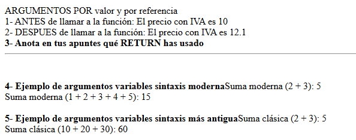
2. Inclusión de ficheros externos (include/require).
Conforme vayan creciendo los programas que hagas, verás que resulta trabajoso encontrar la información que buscas dentro del código.
- En ocasiones resulta útil agrupar ciertos grupos de funciones o bloques de código, y ponerlos en un fichero aparte.
- Posteriormente, puedes hacer referencia a esos ficheros para que PHP incluya su contenido como parte del programa actual.
Para incorporar a tu programa contenido de un archivo externo, tienes varias posibilidades:
- include : Evalúa el contenido del fichero que se indica y lo incluye como parte del fichero actual, en el mismo punto en que se realiza la llamada. La ubicación del fichero puede especificarse utilizando una ruta absoluta, pero lo más usual es con una ruta relativa. En este caso, se toma como base la ruta que se especifica en la directiva include_path del fichero php.ini . Si no se encuentra en esa ubicación, se buscará también en el directorio del script actual, y en el directorio de ejecución.
- include_once: Si por equivocación incluyes más de una vez un mismo fichero, lo normal es que obtengas algún tipo de error (por ejemplo, al repetir una definición de una función). include_once funciona exactamente igual que include , pero solo incluye aquellos ficheros que aún no se hayan incluido.
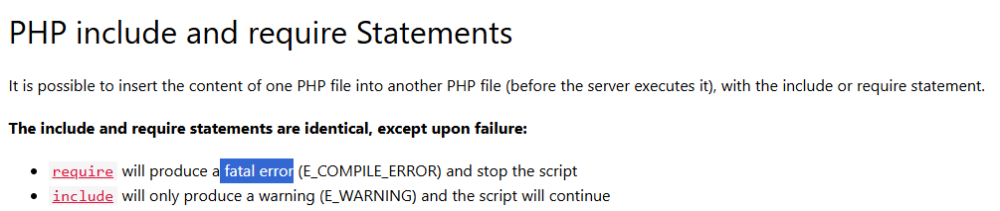
Errores con include y require
- require : Si el fichero que queremos incluir no se encuentra, include da un aviso y continua la ejecución del guión. La diferencia más importante al usar require es que en ese caso, cuando no se puede incluir el fichero, se detiene la ejecución del guión.
- require_once . Es la combinación de las dos anteriores. Asegura la inclusión del fichero indicado solo una vez, y genera un error si no se puede llevar a cabo.
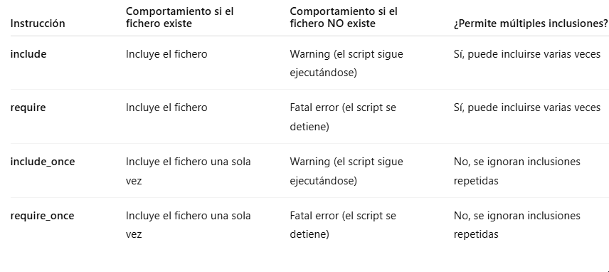
Muchos programadores utilizan la doble extensión .inc.php para aquellos ficheros en lenguaje PHP cuyo destino es ser incluidos dentro de otros, y nunca han de ejecutarse por sí mismos.
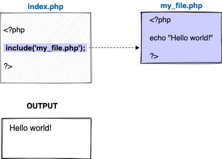
Recuerda:
La diferencia clave entre include y require es:
include→ si el archivo no se encuentra, muestra warning y el script sigue.require→ si el archivo no se encuentra, lanza fatal error y el script se detiene.
💻Programa19: - CARPETA Programa19
Programa19.php: include (Ruta:dwes/UD2/Entrega2/Programa19)
En vez de un script php, vamos a crear una carpeta llamada Programa19 con varios ficheros que incluiremos con INCLUDE y REQUIRE.
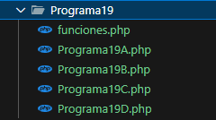
Para el Programa19, separa el siguiente código en diversos scripts del Programa19A, B, C, D:
<?php
echo "<h2>Pruebas de include / require</h2>";
// 1. include
include "funciones.php";
echo saludar("Ana") . "<br>";
// 2. require
require "funciones.php";
echo despedir("Luis") . "<br>";
// 3. include_once (solo se incluirá una vez)
include_once "funciones.php";
include_once "funciones.php"; // se ignora
echo "3 x 4 = " . multiplicar(3, 4) . "<br>";
// 4. require_once (solo se incluirá una vez)
require_once "funciones.php";
require_once "funciones.php"; // se ignora
echo "20 / 5 = " . dividir(20, 5) . "<br>";
?>
Para el código de funciones.php, puedes usar:
<?php
function saludar($nombre) {
return "Hola, $nombre. Bienvenido.";
}
function despedir($nombre) {
return "Adiós, $nombre. Hasta pronto.";
}
function multiplicar($a, $b) {
return $a * $b;
}
function dividir($a, $b) {
if ($b == 0) {
return "Error: división por cero";
}
return $a / $b;
}
?>
Actividad
Actividad
Crea una estructura con dos ficheros donde uno sea incluido parecida a la del ejemplo y ejecútala
Prueba todas estas características en uno o varios scripts HTML+PHP en la ruta -SemanaN/inclusionFicheros/nombredetuscripts.php
Funciones PHP Más usadas.
A continuación se enlazan varios artículos donde relacionan algunas de las funciones nativas de PHP más utilizadas
💻Programa20: Funciones + usadas
Programa20.php: Funciones usadas (Ruta:dwes/UD2/Entrega2/)
Navega por los enlaces anteriores, investiga y utiliza algunas de las funciones más importantes que veas, documéntalas en tu readmeEntrega2.md. Prueba al menos 8 de estas características en uno o varios scripts HTML+PHP en la ruta. Deberás elegir una para explicar a tus compañeros al menos una función que no se haya visto
Extensiones
Como programador puedes aprovecharte de la gran cantidad de funciones disponibles en PHP . De éstas, muchas están incluidas en el núcleo de PHP y se pueden usar directamente. Otras muchas se encuentran disponibles en forma de extensiones , y se pueden incorporar al lenguaje cuando se necesitan.
Con la distribución de PHP se incluyen varias extensiones. Para poder usar las funciones de una extensión, tienes que asegurarte de activarla mediante el uso de una directiva extensión en el fichero php.ini . Muchas otras extensiones no se incluyen con PHP y antes de poder utilizarlas tienes que descargarlas.
Para obtener extensiones para el lenguaje PHP puedes utilizar PECL. PECL es un repositorio de extensiones para PHP. Junto con PHP se incluye un comando pecl que puedes utilizar para instalar extensiones de forma sencilla:
Instalar extensiones
Extensiones
Por ahora no dedicaremos tiempo en clase para instalar alguna extensión hasta que no sean requeridas
Puedes indagar un poco más al respecto en
- https://www.php.net/manual/es/install.pecl.windows.php
- https://pecl.php.net/
- https://diego.com.es/extensiones-en-php,
Actividad Entregable
Entregable
Tienes la info en la sección "Actividad entregable"